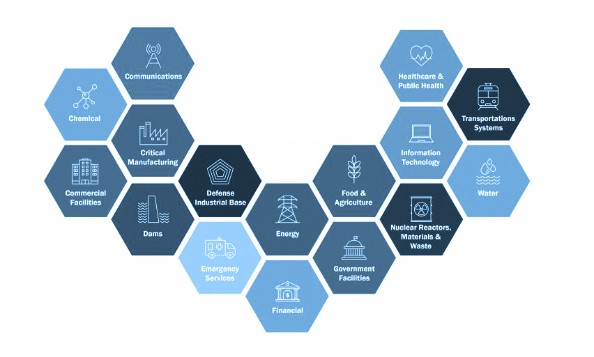

Background
Topic Background
[Topic background text here...]
- [Source 1]
- [Source 2]
Critical Infrastructure
The physical and virtual systems and networks crucial for the functioning of society, economic stability, and national security.
During the COVID-19 Pandemic, the U.S. Cybersecurity & Infrastructure Security Agency (CISA) defined 16 critical infrastructure sectors to provide guidance for what was considered the essential critical infrastructure workforce. Since then, these 16 sectors have provided guidance to international organizations and governments that are developing cybersecurity performance standards and reporting metrics.
16 Sectors (as defined by CISA):

- https://www.sciencedirect.com/topics/computer-science/critical-infrastructure
- https://www.ibm.com/think/topics/critical-infrastructure
- https://www.cisa.gov/topics/critical-infrastructure-security-and-resilience/critical-infrastructure-sectors
- https://www.atlanticcouncil.org/in-depth-research-reports/issue-brief/critical-infrastructure-cybersecurity-prioritization/
- https://www.cisa.gov/topics/risk-management/coronavirus/identifying-critical-infrastructure-during-covid-19
About this Capstone
Welcome to my Capstone Project! My name is Amelia Willmann, and I am a Northeastern University student studying Data Science & International Affairs. My passion lies at the intersection of these two fields, specifically the impact of emerging tech on geopolitical dynamics. This curiosity introduced me to the Cybersecurity field and sparked my interest in cyberattacks and their usage in modern warfare. For the feasibility of this project, I have attempted to narrow my focus to cyberattacks on critical infrastructure, although this is still a complextopic. Rather than tackle everything there is to know about the issue, I intent to instead grab your attention and pique your own interest in what is not being covered in the news. With this project, I hope to leave you asking more questions